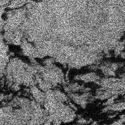
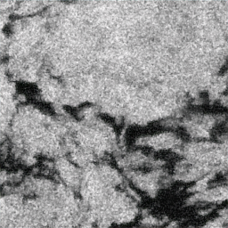

De-U2U-Net Static Demo
Task-aware self-supervised SAR image restoration for marine oil spill mapping.
Project page preview
Sample 000005


<>
Noisy SAR input
De-U2U-Net restored output
Speckle-aware restoration
Examples emphasize structural clarity under SAR degradation.
Mapping-oriented detail
Restoration is presented with downstream oil-spill interpretation in mind.
Static review demo
No model code, weights, checkpoints, or inference scripts are distributed here.